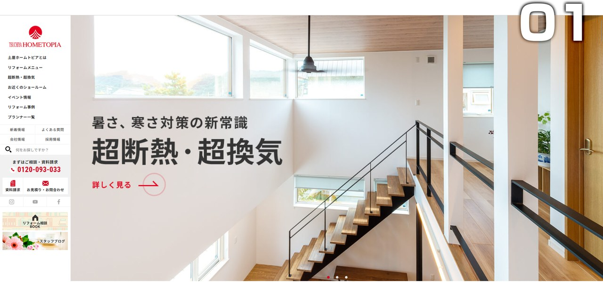
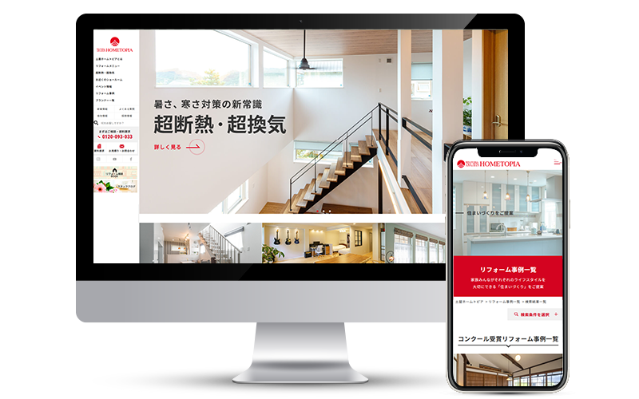

01
土屋ホームトピア
住宅リフォーム ／ コーポレートサイト高単価商材のUX設計 ― CVR 150%達成


住宅リフォーム会社のサイトです。「暑さ、寒さ対策の新常識 ― 超断熱・超換気」という打ち出しを、室内写真を大きく使ったファーストビューで表現しました。
- 左サイド固定ナビゲーションの構成
- リフォーム事例・プランナー紹介への導線設計
- 資料請求・見積もり相談への問い合わせ導線
フルリモート案件で活かせる再現性：高単価で検討期間の長い商材ほど、訴求の一貫性と「次に何をすればいいか」が明確な導線が成約率を左右します。この情報設計の型は、業種を問わず高単価商材のLP・サイトに転用できます。
「信頼を可視化し、CVRを150%向上させたUX/UI戦略」
- 事業内容
- 建築・高付加価値リフォーム事業
- 担当範囲
- ディレクション、デザイン、コーディング（全工程を一貫して担当）
- 制作期間
- デザイン3週間、コーディング2ヶ月
- 使用ツール
- Photoshop / Illustrator / Dreamweaver
背景と課題
リフォームという高単価な「一生モノ」を扱うビジネスにおいて、当時のサイトには2つの大きな課題がありました。
- 情報の不透明による離脱：施工事例や価格帯への導線が複雑で、ユーザーが検討材料を得る前に離脱（離脱率が平均より15%高い状態）。
- 情緒的価値の欠如：機能面の説明に終始しており、「この会社に頼めばどんな理想の暮らしが手に入るか」というベネフィットが伝わっていない。
デザインプロセス
① リサーチ・競合分析
競合3社とのベンチマーク調査を実施。ユーザーは「安心感」と「デザインセンス」の両立を求めていることを再定義。北菓楼のサイト設計でも活用されている「余白による高級感」を建築デザインにも応用しました。
② 仮説設定・ペルソナ設計
「40〜50代の住み替え・リノベーション検討層」をターゲットに設定。心理的ハードルは「失敗したくない、いくらかかるか不安」。アプローチとして、施工事例を「カタログ」のように美しく見せつつ、具体的なリフォーム期間や費用感をセットで提示しました。
③ 情報設計・UIデザイン制作（UXの最適化）
- 目線の遷移（F型・Z型）：ファーストビューで最高品質の施工写真を配置し、直下に「悩み別解決メニュー」を置くことで、ユーザーの自己投影を促進。
- 色彩設計：信頼を示すネイビーと、温もりを感じさせるベージュを基調にし、アクションボタン（CV）には補色を用いて視認性を極限まで高めました。
④ コーディング・UI改善
Dreamweaverを駆使し、マルチデバイスでの表示速度を最適化。画像軽量化により、離脱の大きな要因となるページ読み込み速度を30%改善しました。
デザインの意図と解決策
- 「施工事例」を自分事化させる設計：単なる写真の羅列ではなく、Before/Afterを並列し、ユーザーが抱える「古い家がどう変わるか」という不安を「期待」に変えるUIを設計。
- ストレスフリーな購買導線：全ページのフッターに「無料診断・見積もり」への固定導線を配置。迷わせない設計を徹底。
成果
デザイン刷新後、3ヶ月間の計測で以下のインパクトを実現しました。
- CVR（問い合わせ率）：1.5倍（150%向上）
- 平均セッション時間：45秒増加（施工事例の回遊性が向上）
- 離脱率：主要ランディングページにおいて20%の減少に成功